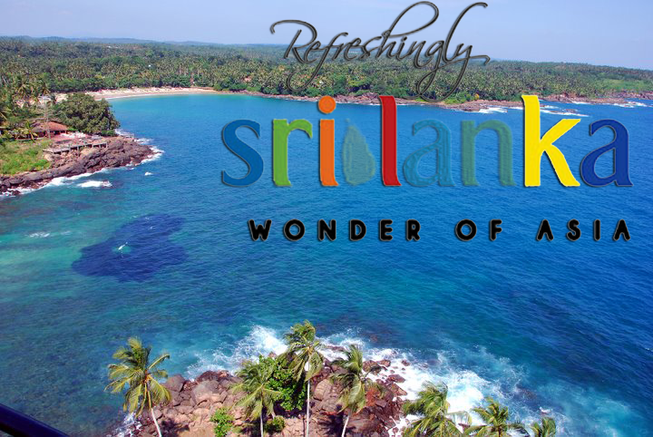

The government initiatives in development of tourism date back to 1937 when the Ceylon Tourist Bureau was established. However, it was closed down in September 1939 due to World War II. After Sri Lanka's independence the promotion of tourism was again considered by re-establishing the Ceylon Tourist Board which took over the function of the Tourist Bureau. In 1965, J. R. Jayewardene as Minister of State initiated the first major development of the tourism industry with the Ceylon Tourist Board Act No 10 of 1966 and the Ceylon Hotels Corporation Act No 14 of 1966, which formed the Ceylon Tourist Board and the Ceylon Hotels Corporation. Since then the Ceylon Tourist Board has functioned as the state agency, responsible for development and promotion of the tourism sector in Sri Lanka. Ceylon Hotels Corporation paved the way government investments build hotels needed to attract tourist. In October 2007 according to Section 2 of the Tourism Act No. 38 of 2005, the Sri Lanka Tourist Board (Act No 10 of 1966) was replaced by the Sri Lanka Tourism Development Authority (SLTDA). Currently Sri Lanka Tourism Development Authority has classified Sri Lanka into several resort regions suitable for tourism development.

One of the most interesting aspects of Sri Lanka's tourism industry is the beautiful natural environment of Sri Lanka.
This is mainly due to the large variety of climates within a very short range. The coastal areas, the hilly areas in
the middle of the country, the kingdom of Anuradhapura a little above it, and the lowland Ratnapura areas are all great
places to experience beautiful ecosystems due to its unique climatic conditions.
Also, religious places in Sri Lanka should not be missed by a tourist. Because it is an experience that no other country has.
Also, there are many tourist places in Sri Lanka in the field of cultural sites, ancient constructions, etc.
Police Emergency Hotline >>> 118 / 119
Ambulance / Fire & rescue >>> 110
Accident Service-General Hospital-Colombo >>> 011-2691111
Tourist Police >>> 011-2421052
Police Emergency >>> 011-2433333
Government Information Center >>> 1919
Report Crimes >>> 011-2691500
Emergency Police Mobile Squad >>> 011-5717171
Fire & Ambulance Service >>> 011-2422222